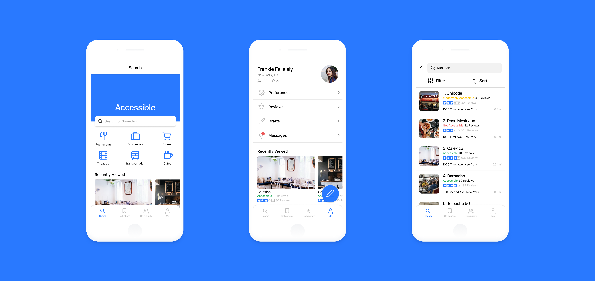

Accessible
The task of the project was to redesign yelp with an individual focus on a specific audience or use-case. I had the option to completely redesign Yelp and act as though it didn’t exist, or I could create something that could co-exist with it today.
There is an endless amount of recommendations for restaurants and services all over the city, however there is little consideration to the accesibility to these places for a person who is disabled.
I began my journey by first searching for what products were already exisiting in this space.
I decided to take use of the community of the internet and browsed around online at many different messaging boards, groups, and personal blogs.
After looking at the information that I gathered from my research I needed to start thinking about the structure of the app and what features needed to be added to create something outstanding.